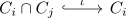

topological space as colimit of a locally finite covering
Proposition
Let $(X, \mathcal{T})$ be a topological space, $C_i$ a locally finite covering of $X$. Consider $I$ as diagram

for $i,j \in I$
Then there exists a canonical homeomorphism
\begin{align*}
X \cong \colim_I
\end{align*}
Proof
w.l.o.g. let $\mathrm{Set}(X) = \mathrm{Set}(\colim_I)$ (cf. forgetful functor from Top to Set admits left adjoints and left adjoint preserves colimits, limit in Set)
by colimit of a space finer than the original space, we conclude, that
\begin{align*}
\mathrm{id}: \colim_I \rightarrow& X
\end{align*}
is continuous
by construction,
\begin{align*}
\mathrm{id}_{\vert C_i}: (C_i)_{X} \rightarrow (C_i)_{\colim}
\end{align*}
is continuous. Hence by glueing lemma for a locally finite, closed covering, it follows, that
\begin{align*}
\mathrm{id}: X \rightarrow& \colim_I
\end{align*}
is also continuous